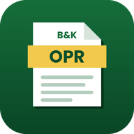

Tampal pautan aplikasi Penjana OPR sekolah anda. Langkah ini hanya perlu dibuat sekali pada peranti ini.
Penjana OPR memerlukan internet untuk menyimpan dan menjana laporan. Semak sambungan anda, kemudian cuba lagi.